DECK GUIDE
P2 @ SPS H4 — slide options for MPGD26
One option per slide, grouped into the talk's three
acts + synthesis. Tags: CORE
recommended for the 15-min talk,
OPTIONAL strong if time
allows, BACKUP keep
ready for questions. Navigate with ←/→. Every figure is a PNG in
figs/, regenerated 16 Aug from the EOS products; numbers match
the full report.
- Suggested 15-min skeleton (taskplan T8): motivation 2 — Act 1 SNR/rate 3
— geometry verdict 1 — Act 2 bench+QA 3 — Act 3 beam test 5 —
synthesis + outlook 1.
- This deck covers Act 3 + gas/outlook + synthesis (the July–August
beam test). Act 1 (Nov-2025 SNR/rate) and Act 2 (cosmic bench) come from the
existing material.
CORE — setup
The July 2026 H4 campaign in one picture
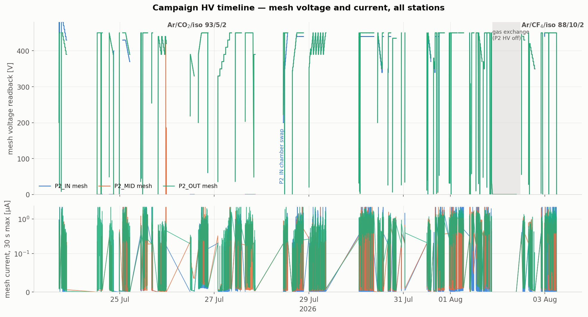
Message: 12 days, two readout phases (DREAM telescope →
VMM campaign on the same detectors), two gases, every scan type: mesh, drift,
two 7×7 2D grids, high-stat efficiency, electronics config scan.
537 GB DREAM + ~400 GB VMM, all on EOS, all analysed.
- 3 × P2 BASKET pad Micromegas between 2 EIC uRWELL trackers, SPS muons
- Speakable numbers: 23 named runs + 51 VMM-phase runs, ~108 triggers on tape
CORE — method
Absolute efficiency against an independent tracker

Message: two uRWELL planes give 1.15 M tracks/station
per sub-run; residuals are 3.4 mm rms = 12 mm/√12 — textbook binary pad
response. Denominator hygiene (recorded-trigger, settle, spark-veto,
fiducial) and a probe-radius systematic scan → ε to ±0.3 %.
- Bonus credibility: a deliberately flipped ribbon in the map drops ε
to 60 % — the method catches mapping errors two independent ways.
CORE — efficiency
Efficiency vs mesh voltage (absolute)
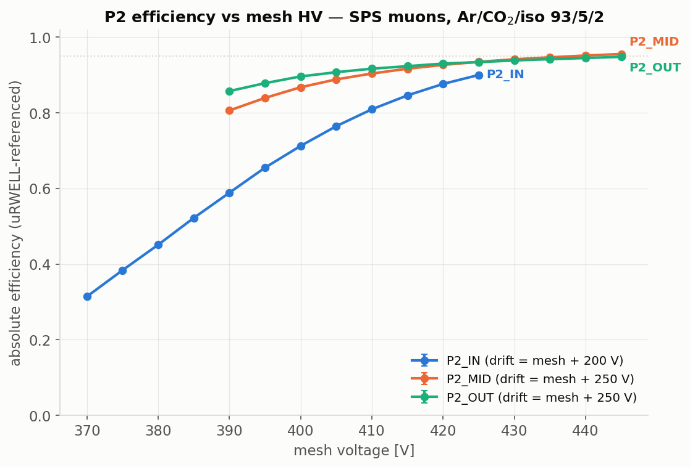
Message: clean turn-ons; MID
0.81→0.96, OUT 0.86→0.95 (390→445 V);
IN (CERN bulk chamber) 0.31→0.90. No plateau by the
HV ceiling — the working point is the top of the scanned range.
CORE — efficiency
Efficiency vs drift voltage
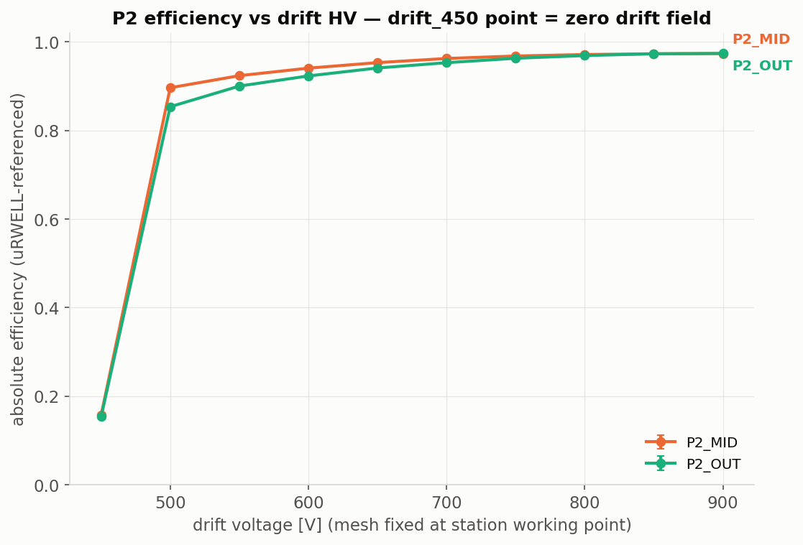
Message: from 16 % at zero drift field to 97 %
flattening above ~850 V; the transparency plateau extends past the HV
ceiling (confirmed by the dedicated mesh-390 extension run).
CORE — hero plot
The full (mesh, drift) efficiency surface
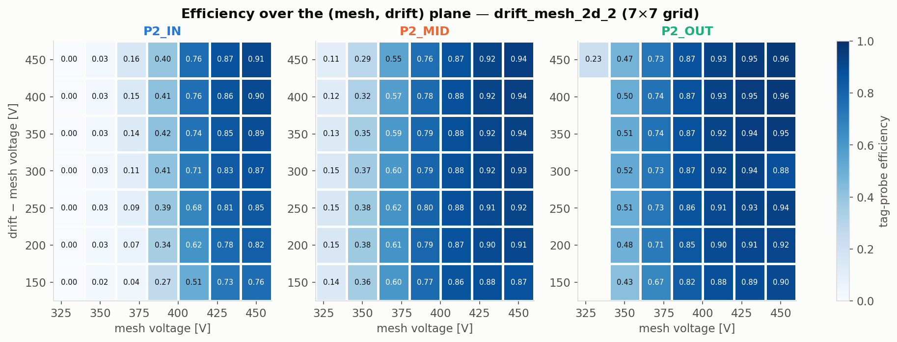
Message: a complete 7×7 map per station from one
overnight run — efficiency is mesh-dominated, drift dependence mild above
gap 200 V. This is the "we characterised the detector, not a point" slide.
CORE — loss budget
Where the missing 3–4 % actually goes
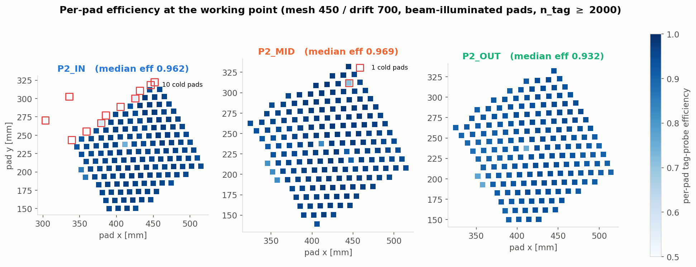
| pp | IN | MID | OUT |
|---|
| total ineff. | 3.5 | 2.9 | 4.0 |
| "no response" | 2.9 | 2.4 | 3.3 |
| far cluster | 0.6 | 0.5 | 0.6 |
| cold pads | 2.9* | 0.1 | 0.1 |
Message: ~83 % of misses = no response at all — a
uniform gain/threshold floor, so more gain (or the faster gas at equal
gain) attacks it directly. Localized losses are one weak connector on
P2_IN (*0.72 in-beam) and the support pillars (0.07 pp). Pillars repeat at
identical positions on all three stations — the map is self-validating.
CORE — stability (new)
Charging-up, caught in the act
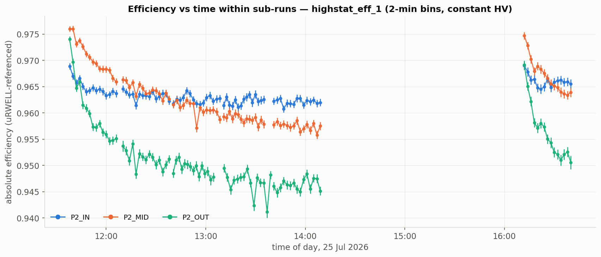
Message (new analysis): in 2-min bins at constant HV,
MID/OUT decay 1–2.5 pp
with a ~30–40 min time constant after every beam-on and reset during the
pause — charging-up dynamics, chamber-specific
(IN is flat). Honest headline: "96–97 % settling to
≈96/95 % after an hour at 4.6 kHz".
CORE — timing
Time resolution: the correction ladder
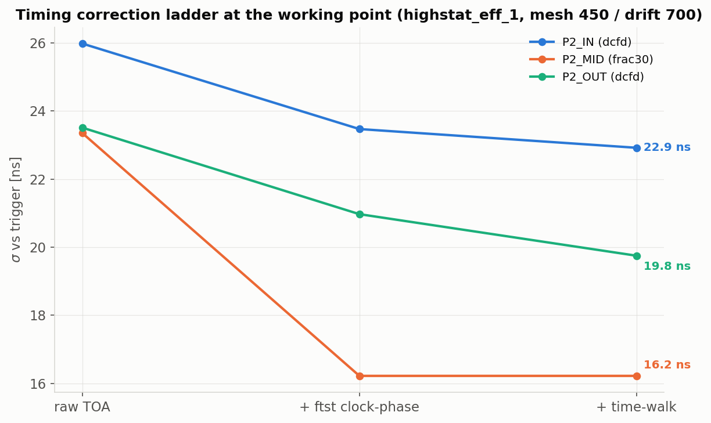
Message: waveform TOA with per-FEU clock-phase and
walk corrections: 15.5 /
18.4 / 22.4 ns — the
20 ns P2 goal is met on two of three stations, stable to <0.5 ns
over 4.5 h.
CORE — timing + gas
σ vs drift voltage — and what Magboltz says about the new gas

Message: the measured drift-scan plateau (750–800 V)
is reproduced by Magboltz ⊕ a fitted 13.2 ns non-gas floor. Swap in the
chosen Ar/CF4/iC4H10 88/10/2 and the gas
term collapses (8.8→3.3 ns): expected ≈13.5 ns — the next campaign is
electronics-limited, not gas-limited.
CORE — gas change
We already ran on the new gas — and see it
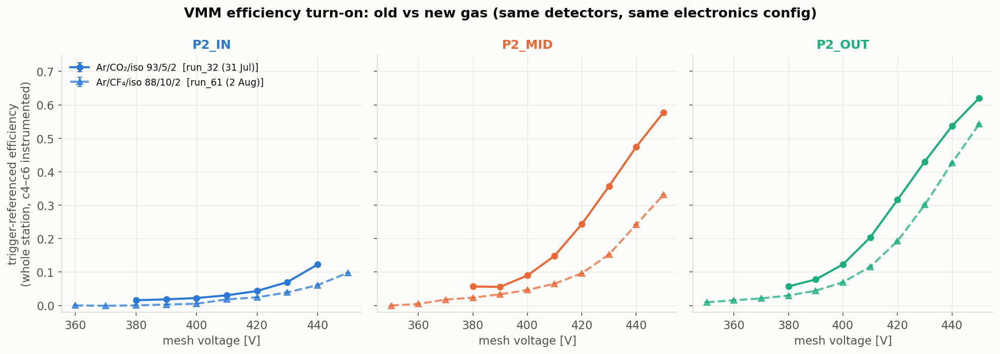
Message: the same VMM mesh scan on both gases: the
turn-on shifts ≈+20–25 V — the direction and rough size of the Magboltz
equal-gain prediction. The gas exchange is pinned in the HV record (P2 off
overnight 1→2 Aug) and the wrong gas labels in 136 DAQ configs were
corrected on EOS.
CORE — synthesis
Synthesis table (the slide people photograph)
| station | ε @ WP (abs.) | settled ε | σ [ns] |
spatial | sparks Jul | verdict |
|---|
| P2_IN (CERN bulk) | 96.5 % | flat |
22.4 | 3.4 mm
= 12 mm/√12 | 15 |
declined, swapped 28 Jul |
| P2_MID | 97.1 % | ≈96 % | 15.5 |
12 | best station |
| P2_OUT | 96.0 % | ≈94.6 % | 18.4 |
69 | works; uniform gain deficit + sparky |
| VMM readout (c4–c6) | turn-on shape ✓, cluster 1.11–1.18 pads |
BCID 22.5 | — | — | needs per-pad denominator (path known) |
Message: a P2-geometry telescope measured absolutely:
96–97 % efficiency, 15–22 ns timing, binary-readout resolution, with its
loss budget itemised and its time-dependence understood.
OPTIONAL — timing
The timing (mesh, drift) surface
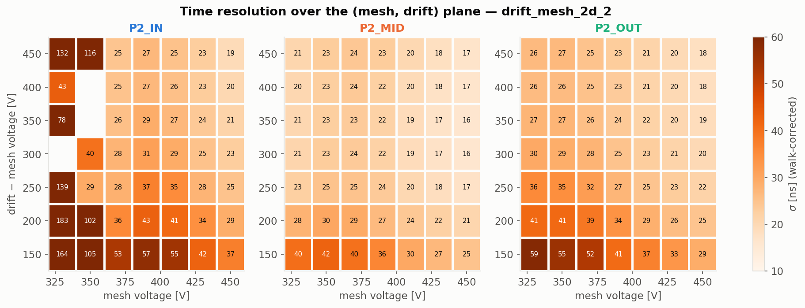
Message: timing companion of the 2D efficiency map:
optimum ridge at high mesh, gap 300–450 V; below 200 V the drift-time
spread explodes. Working point within 0.5 ns of the 2D optimum.
OPTIONAL — timing
σ vs mesh voltage — both scan campaigns
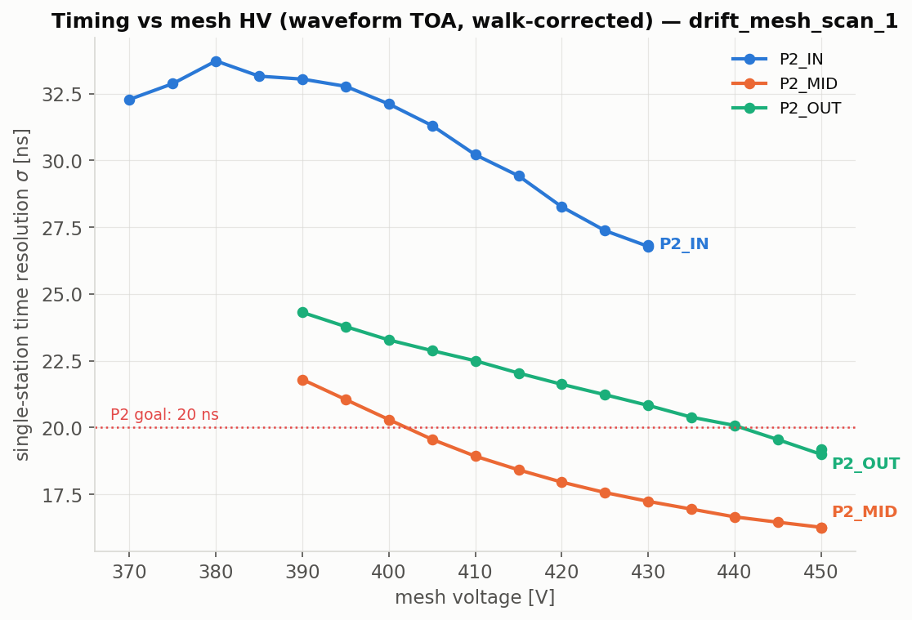
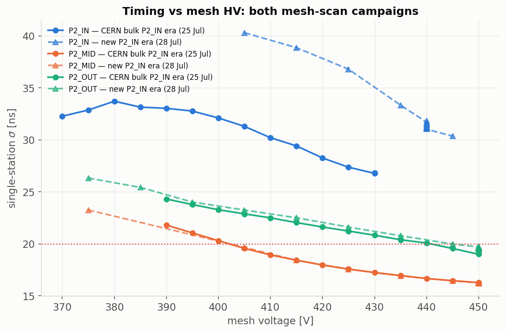
Message: monotonic improvement, no plateau by the
ceiling — argues for headroom above 450 V. The post-swap scan reproduces
MID/OUT and shows the new P2_IN tracking them.
OPTIONAL — detector story
Two P2_IN chambers, one beam

Message: the CERN bulk chamber declined and was
swapped mid-campaign for a metallic-mesh Micromegas — commissioned from
zero to a full efficiency curve within one morning, reaching 93 % at 450 V.
A nice operational-maturity story.
OPTIONAL — VMM
VMM electronics config scan
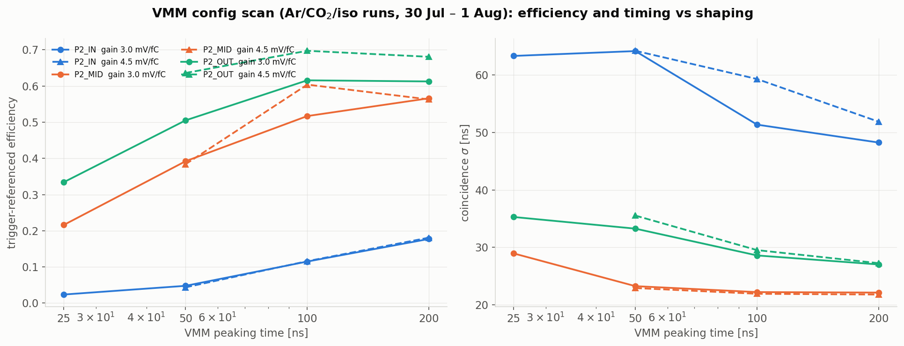
Message: the dual-readout campaign's electronics
deliverable: efficiency and coincidence width vs VMM gain × peaking time —
best at gain 4.5 mV/fC, 100–200 ns peaking. Direct input to the P2
front-end choice.
OPTIONAL — gas
The drift-velocity handle, gas A vs gas B
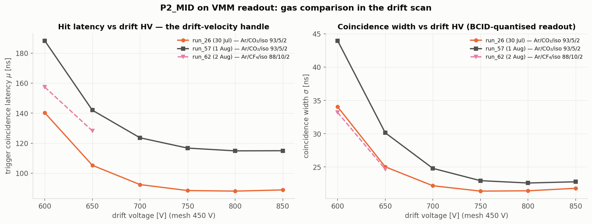
Message: mean hit latency vs drift voltage: the
CF4 mixture arrives ~30 ns earlier at low field, low-field
excess 73→42 ns — drift measurably faster, as designed. (Honest caveat:
the two gas-A scans two days apart also differ — open item.)
OPTIONAL — stability
Spark rates and HV health across the campaign

| period | IN | MID | OUT |
|---|
| July (gas A) [sparks/h] | 0.3 | 0.2 | 1.3 |
| VMM, gas A | 1.6 | 0.5 | 0.1 |
| VMM, gas B | 1.4 | 0.2 | 0.3 |
Message: P2_OUT was the July offender (up to 11 %
dead-time) and conditioned quiet; the fresh P2_IN chamber conditions at
~1.5/h; and — the CF4 worry — no spark penalty visible on the
new gas in its 11 hours. Zero HV trips after 25 Jul.
OPTIONAL — methods
Three efficiency methods, one detector
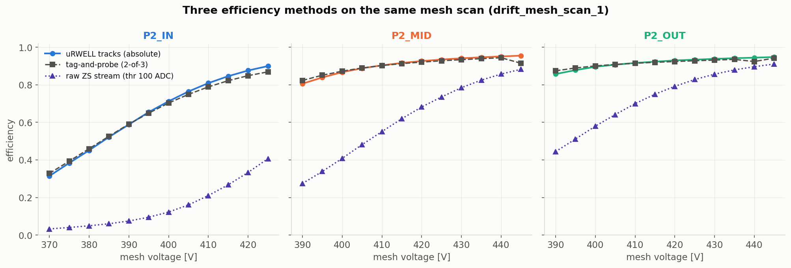
Message: absolute-tracker, tag-and-probe and a
clustering-free raw-stream check agree on the turn-on — the efficiency is a
property of the detector, not of one analysis.
BACKUP — caveat
Why DREAM and VMM efficiencies must not share an axis
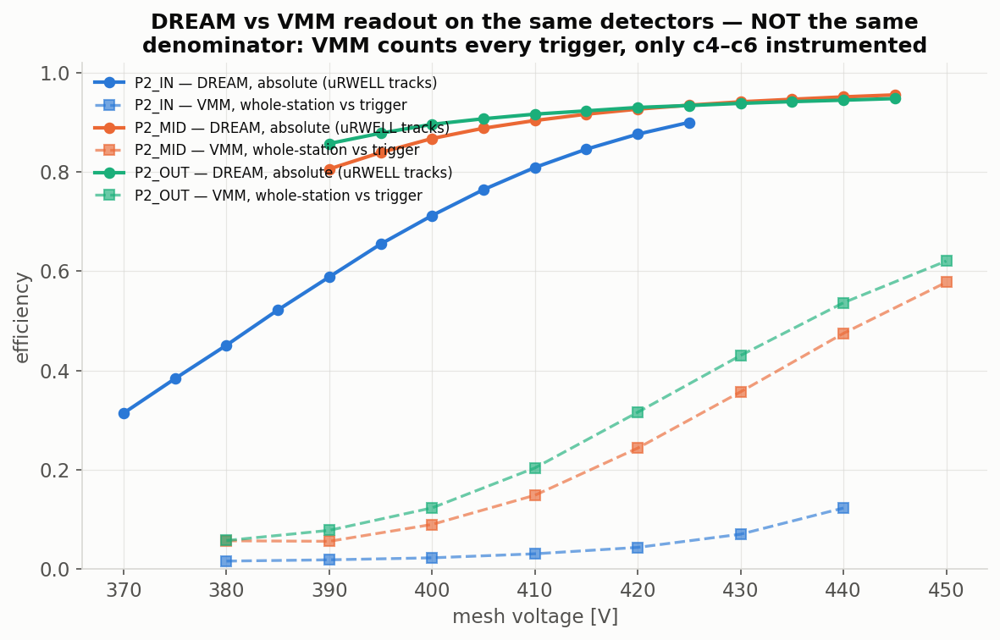
Message: the VMM number counts every trigger while
only c4–c6 carry hybrids (and P2_IN sat below turn-on) — comparable
quantities are the turn-on shape, cluster size and hit maps. The per-pad
acceptance-restricted efficiency is the known missing step; tonight's
per-capture stores make its backfill cheap.
BACKUP — stability
The 27 Jul reference run: levels moved
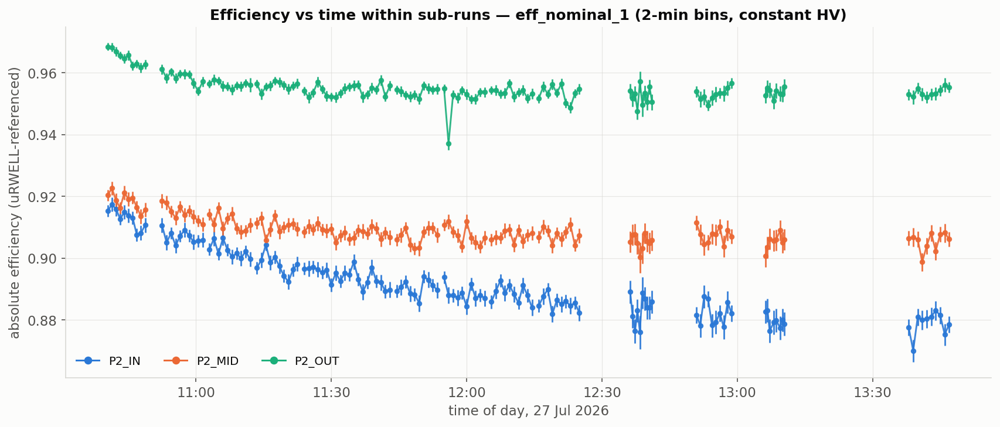
Message (for questions): two days after the headline
run the levels sit 3–5 pp lower and re-ordered, and the CERN P2_IN visibly
declines through its final morning. Candidates: charging history, beam
steering, drift 700→750. This is why the talk quotes the 25 Jul high-stat
numbers.
BACKUP — QA
Data-quality register
- 7 decoder-hang FEU files (eff_nominal 10/14/15, drift2_11, drift_700) —
raw intact, re-decode queued for when a DREAM decoder is available.
- VMM gas-B drift data = 2 points (run_59 captured nothing; run_62
stopped after 2 of 6; run_61 drift half unusable).
- Open anomaly: two identical gas-A VMM drift scans 2 days apart differ
~30 % in apparent drift speed — check T/P/flow logs.
- Chunked sub-runs (up to 57 % of events in later chunks) — all tonight's
analyses sum chunks.
- 136 wrong gas labels fixed on EOS; run_59+ relabel pending
confirmation.
Message: the dataset is understood file-by-file —
holes are enumerated, not discovered later.
BACKUP — outlook
Outlook / next-campaign shopping list
- Gas: one DREAM waveform run on
Ar/CF4/iC4H10 88/10/2 to confirm the
predicted ≈13.5 ns (gas term 8.8→3.3 ns, working point +16 V).
- Electronics: attack the 13 ns non-gas floor (walk/shaping);
VMM time calibration runs to break the 22.5 ns BCID quantisation.
- VMM per-pad efficiency backfill from tonight's capture stores →
true DREAM/VMM like-for-like.
- Hardware: P2_IN connector 11/14 check; P2_OUT gain
calibration; drift ceiling > 900 V for the transparency turnover;
P2_IN at 445–450 V.
- Untouched data: MX17 "Detector E" on both gases; mesh scans down
to 330 V for gain-model anchoring.